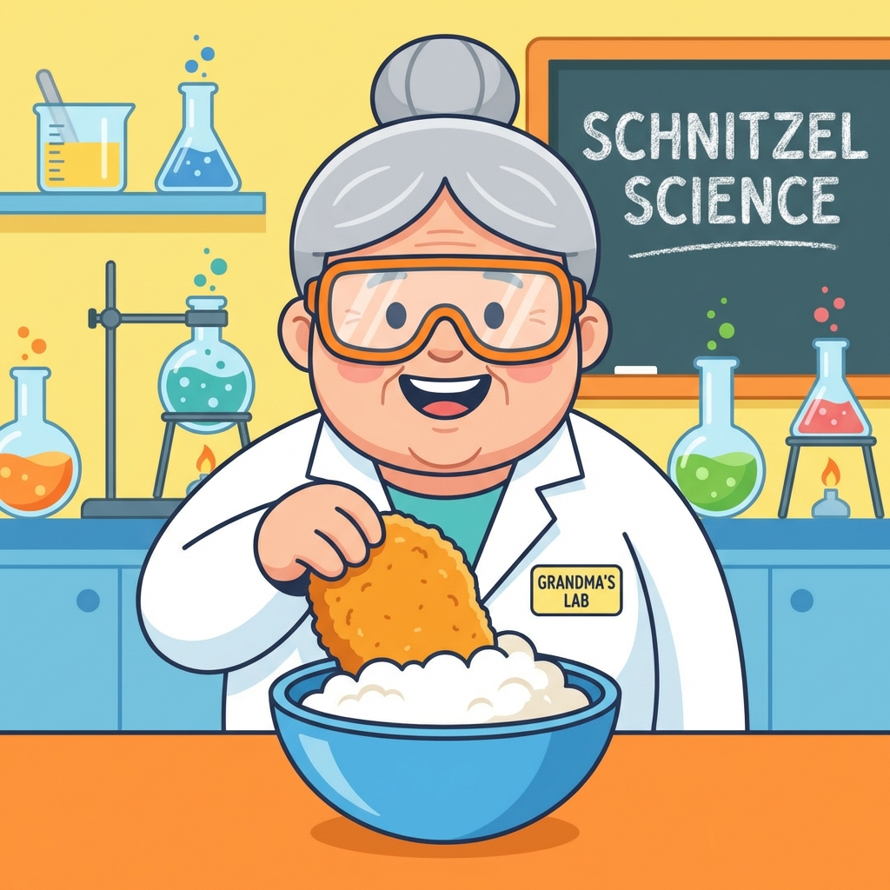
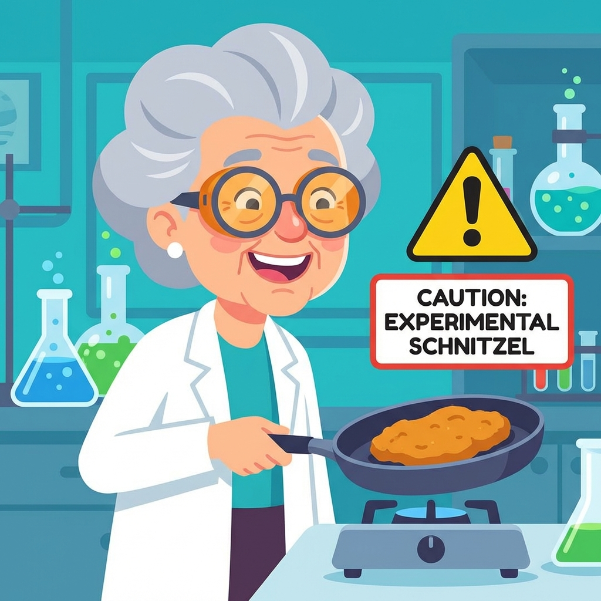

המעבדה לשניצל מושלם
בהנהלת סבתא שניצל, PhD (דוקטור לשניצלולוגיה)
⚠️ נוהל בטיחות 67 ⚠️
לפני שמתחילים בניסוי, כל מדען חייב לאשר את הסעיפים הבאים:
🧪 המגיבים (המצרכים)
כל ניסוי מוצלח מתחיל בחומרים הנכונים:
1
Ch
Chicken
2
Eg
Eggs
3
Fl
Flour
4
Br
Bread
5
Oi
Oil
6
Le
Lemon
7
Sp
Spice
🧬 פרוטוקול הניסוי (ההכנה)
נא לעקוב בדייקנות אחר ההוראות. כל סטייה עלולה לגרום... לשניצל לא טעים!
שלב 1: הקימחיזציה (The Flourishing)
לוקחים את חזה העוף וטובלים אותו בקמח מכל הצדדים. מנערים בעדינות את העודפים.
💡 טיפ: דמיינו שאתם מאפרים את השניצל באבקת קסמים.
שלב 2: הביצולוגיה (Egg-mersion)
טובלים את השניצל המקומח בביצה הטרופה (עם המלח, הפלפל והחרדל אם שמתם).
💡 טיפ: זה כמו בריכה, אבל דביקה!
שלב 3: הפירורית (Crumb-coating)

מעבירים לפירורי הלחם. לוחצים חזק חזק כדי שהפירורים יידבקו טוב טוב.
💡 טיפ: תנו לשניצל "מכות חיבה" כדי שהפירורים יתפסו.
שלב 4: הטיגון הגדול (Big/Bang Frying)
⚠️ עצור! קרא למפקד (המבוגר)!
מטגנים בשמן חם עד שזהוב ויפה משני הצדדים.
💡 טיפ: השניצל מוכן כשהוא בצבע של מטבע זהב.
🏆 הניסוי הוכתר בהצלחה!
עכשיו נשאר רק החלק הכי חשוב... לאכול!